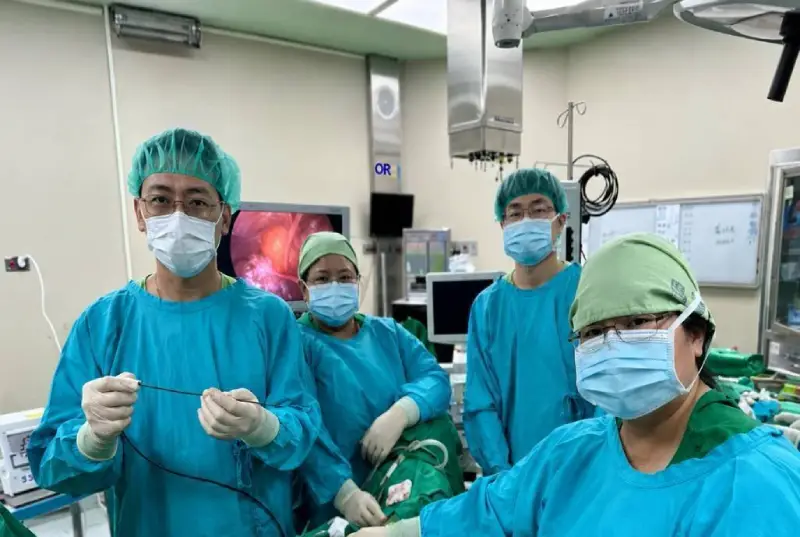

{{ m.title }}
{{ m.desc }}
About Us
從青春期、孕產到熟齡，以專業醫療回應每一階段不同的健康需求。

高雄醫學大學附設中和紀念醫院婦產部，自 1958 年成立以來，持續以婦女健康為核心，結合醫學中心的臨床資源與跨專業團隊，發展婦科、產科與生殖醫學等專業醫療服務。
從疾病預防與診斷、孕產照護，到婦科疾病、婦癌、生殖醫學及婦女泌尿等領域，我們持續透過醫療、教學與研究的整合，提供完整且具連續性的婦女健康照護。
Our Mission
{{ m.desc }}
Our History
{{ t.desc }}
Our Specialties
整合婦科、產科與生殖醫學專業，提供完整的婦女健康服務。
{{ d.desc1 }}
{{ d.desc2 }}
重點服務{{ d.tagsLine }}
Our Commitment
持續發展婦癌、婦女泌尿及微創與無創治療，結合醫學中心的檢查與跨專科資源，重視早期發現、適切治療與後續照護。
持續優化待產、生產與產後照護環境，並結合院內跨專科團隊，強化高危險妊娠及緊急轉診照護，陪伴母親與寶寶安心迎接每一個重要階段。
透過教學、研究與人才培育，持續提升婦女健康照護的專業與品質，以女性需求為核心，發展更完整的醫療服務。